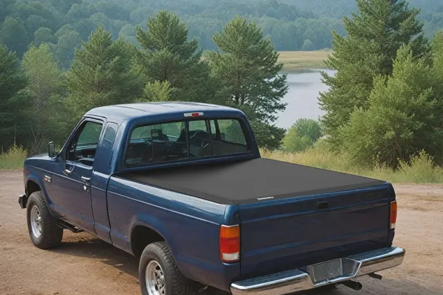
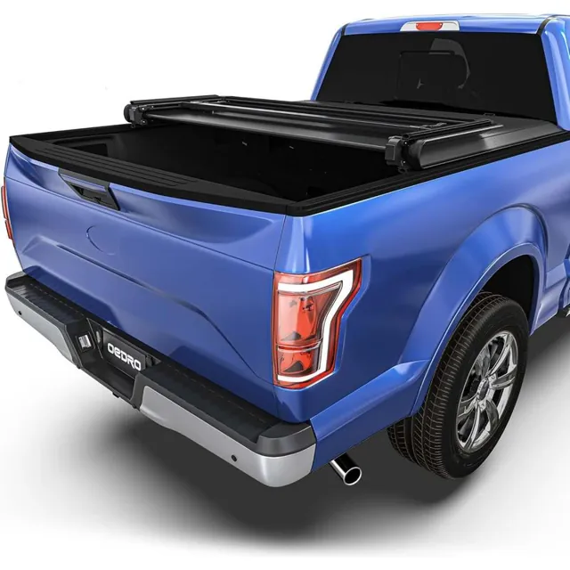
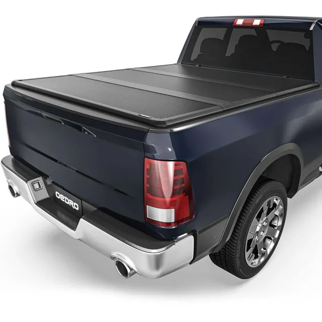

Soft vs. Hard Tonneau Covers: Choose for Your Cargo Routine
Compare soft and hard covers by opening access, tailgate operation, cargo protection, and the work needed to remove them.
In this guide
Describe a normal week of loading
Write down the items that must fit beneath the closed cover and the items that require it open. Include how you load them. Sliding bags in through the tailgate is different from lowering a bulky item into the front of the bed. Measure your own cargo rather than guessing from a photograph.
Mark how often you need the area nearest the cab. Ask each seller to show the cover fully closed, in every permitted driving position, and removed if removal is part of its intended use. A still photo of a cover folded once does not establish whether it can travel that way.
This exercise can change the purchase. If you regularly carry a tall item against the bulkhead, the size and position of the folded stack may matter more than the number of panels. If you rarely open the front of the bed, that same stack may never bother you.
Compare the construction actually offered
A soft cover uses a flexible outer surface supported by its frame. A hard folding cover uses rigid panels. Within either group, opening mechanisms and mounting designs differ. OEDRO's F-150 soft-cover listing offers both tri-fold and quad-fold selections, so “soft” alone does not identify the opening layout.
Check the material description for the exact cover and style you select. A panel surface and its supporting frame can use different materials. OEDRO's Tacoma hard-cover page uses a Fiberglass Reinforced Plastic (FRP) outer layer and an Aluminum Alloy frame. Panel construction alone does not establish a cover's load rating.
Compare the effort required to lift, fold, release, and remove the product. Package dimensions and shipping weight do not tell you what one person must handle during normal use. If you need to remove the cover frequently, ask whether removal leaves rails attached and where the removed assembly should be stored.
Understand what “locks with the tailgate” means
Some covers place the release beneath the closed tailgate area. OEDRO describes that arrangement on its F-150 soft tri-fold page. Ask how the selected cover opens, whether your tailgate locks, and which tailgate operations remain available after installation.
Concealing cargo and preventing a release from being reached are useful functions. They do not establish theft-proof storage. A rigid surface alone is not a security certification, and a flexible cover is not a substitute for a secure tool-storage system. TruXedo's owner's manual explicitly warns that its fabric cover will not prevent theft.
For valuables or equipment that cannot get wet, plan separate secure or water-resistant storage suited to that item. Choose the cover for the protection the manufacturer documents. Do not turn a weather-resistance description into a promise that every seam and tailgate gap is watertight.
Check the permitted driving positions
Find the operating section of the exact manual. It should explain the latches, straps, or props used to secure the cover. Use the operating instructions for the exact OEDRO item. Another cover's secured positions do not authorize the same positions on yours.
For the OEDRO Tacoma cover linked here, the listing also prohibits driving partially open. If your required cargo position is not covered by the matching manual, ask for clarification before purchase. A loose strap or an improvised prop is not a substitute for the specified retention system.
Compare the complete setup
Include any required rail adapters, compatible rack hardware, installation help, and storage needs in the comparison. Two covers with similar purchase prices may require different changes to your truck. Confirm whether your toolbox or bed rack can remain installed.
Finish by ranking the finalists on your actual loading routine: access with ordinary cargo, access with tall cargo, ease of opening, removal requirements, and documented protection. Use the bed-measurement guide to settle size before checkout. A useful shortlist ends with a cover you can operate in the configuration you need.
Parts in this guide
Shop tonneau covers
OEDRO 5.5ft Tri-Fold Tonneau Bed Cover for 2015-2026 Ford F150 F-150 (Excludes Raptor Series) – Waterproof, Durable, Easy InstallationView on OEDRO OEDRO Hard Tri-fold 5FT Tonneau Cover Fold Truck Bed Covers Compatible with 2016-2023 Toyota Tacoma (Excl. Trail Edition) with 5 Feet Bed with Tacoma Bed RailView on OEDRO
OEDRO Hard Tri-fold 5FT Tonneau Cover Fold Truck Bed Covers Compatible with 2016-2023 Toyota Tacoma (Excl. Trail Edition) with 5 Feet Bed with Tacoma Bed RailView on OEDRO
OEDRO 5.7FT Bed FRP Hard Tri-fold Tonneau Cover Fold Truck Bed Covers Compatible with 2009-2026 Dodge Ram 1500 (Inclu. Classic & New Body)View on OEDRO